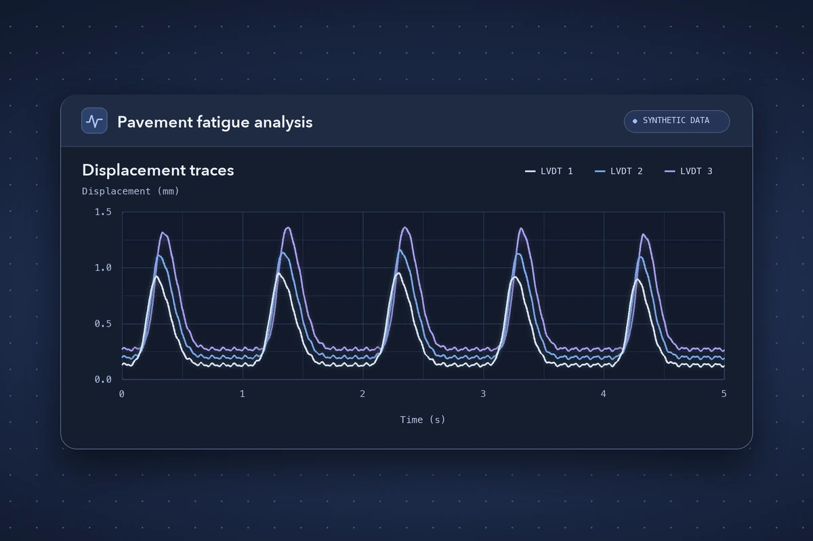

Research software
Pavement fatigue analysis
A Python and Dash workflow for turning high-frequency pavement test recordings into aligned, cycle-level data that researchers can inspect and compare.
Try the signal explorer
- Organization
- UC Pavement Research Center
- Test scale
- Up to 30,000 cycles at 1 kHz
- Tools
- Python, Dash, LVDTs
The challenge
A pavement fatigue test can record tens of thousands of cycles. Load, actuator, displacement, and temperature readings need to be aligned before researchers can compare how a specimen responds over repeated loading.
What I built
I built a Python workflow to align signals, process each cycle, and average displacement measurements from three linear variable differential transformers (LVDTs). I paired it with a Dash interface for uploading multiple files, running the workflow, and visualizing the outputs.
What the workflow delivers
The same processing steps can run across files sampled at 1 kHz, with up to 30,000 test cycles per dataset. The tool produces structured data for post-test analysis and removes the need to align signals and average the three displacement channels by hand.